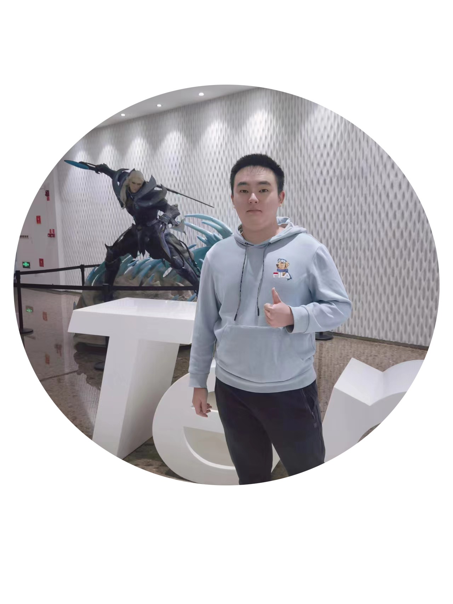
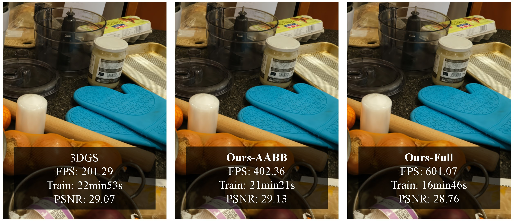

Xinzhe Wang (王新喆)
I am a third-year PhD candidate jointly supervised by Shanghai Jiao Tong University and Shanghai Artificial Intelligence Laboratory, under the primary guidance of Prof. Lizhuang Ma.
I am also advised by Prof. Ran Yi at Shanghai Jiao Tong University, and Dr. Mulin Yu and Dr. Tao Lu at Shanghai Artificial Intelligence Laboratory.
Prior to starting my PhD, I received my Bachelor's degree from HongYi Honor class at the School of Computer Science, Wuhan University.
I'm interested in computer graphics and spatial intelligence.

News
1 paper conditionally accepted by SIGGRAPH Asia 2024
Publications

ACM SIGGRAPH Asia 2024 (Conference Track)
AdR-Gaussian: Accelerating Gaussian Splatting with Adaptive Radius
Education
-

Shanghai Jiao Tong University
School of Computer Science · PhD candidate
Jointly supervised with Shanghai Artificial Intelligence Laboratory
Supervisors: Prof. Lizhuang Ma and Prof. Ran Yi
2024.09–Present
-

Wuhan University
School of Computer Science · Bachelor
2020.09–2024.06
Internship
-

Shanghai Artificial Intelligence Laboratory
Physical Intelligence Center
Research Intern
Supervisors: Dr. Mulin Yu and Dr. Tao Lu
2026.06–Present
-

2025.06–2026.06
-

2023.06–2024.022022.12–2023.02
Selected Awards
- National Scholarship, Education Ministry of China,
- Outstanding Graduates & Honors Bachelor's Degree of Wuhan University,
- First Prize at National Olympiad in Informatics in Provinces,